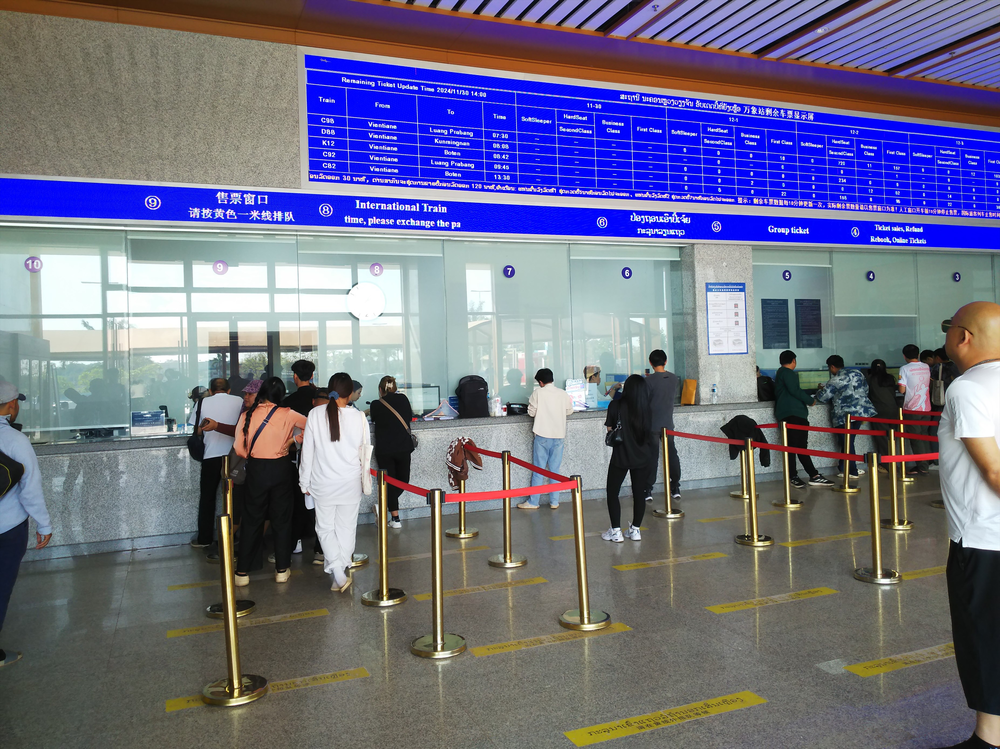
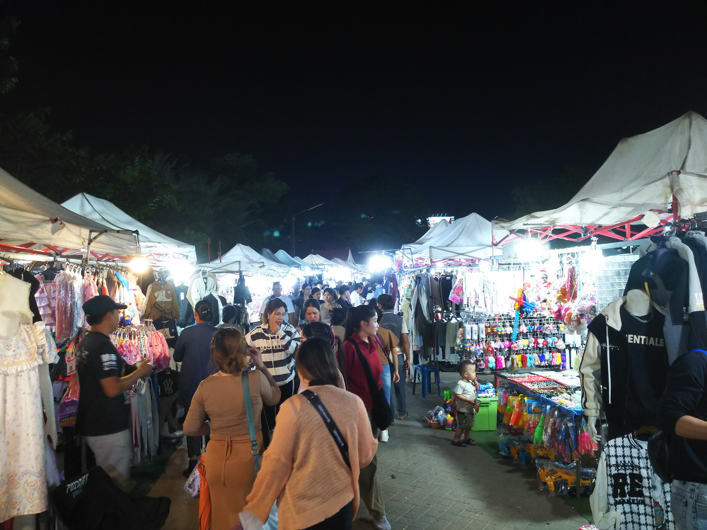
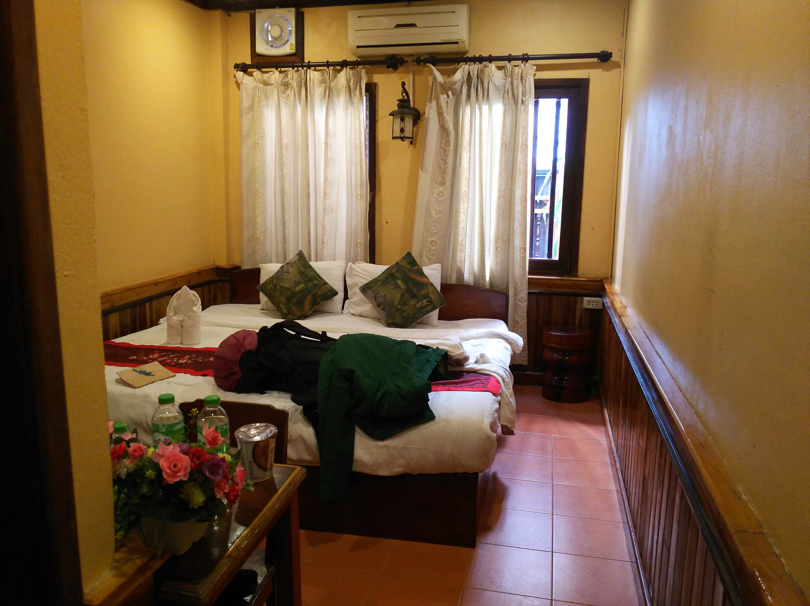
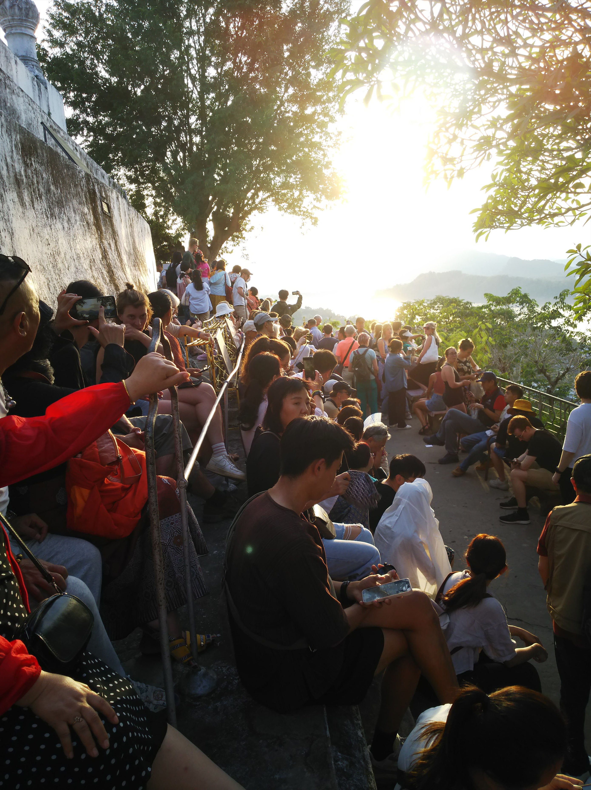
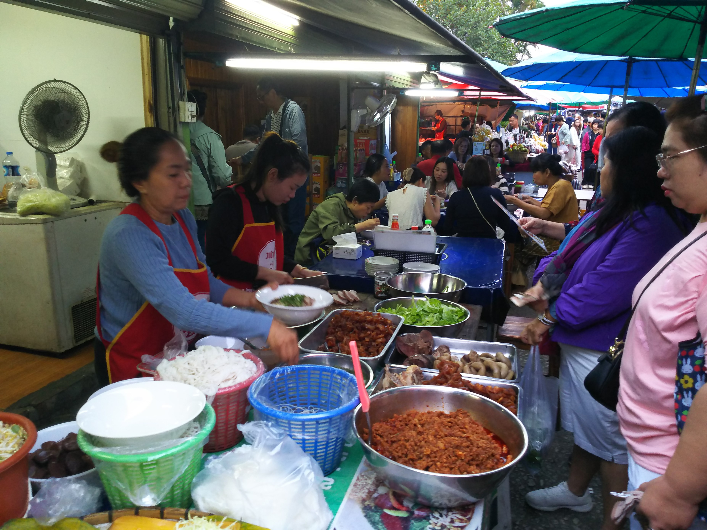
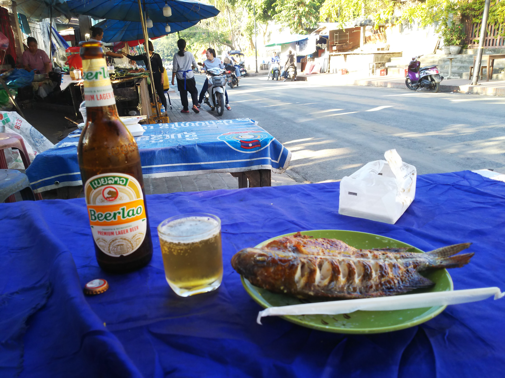
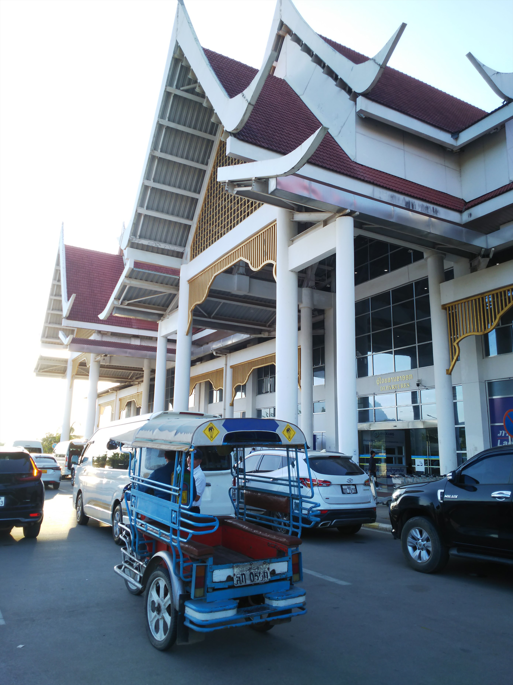

さて、早速ラオスのお金に両替しようとしたんですが、両替所がない！
客引きのタクの運ちゃんに聞いたらＳＩＭカード売ってる所（最近、国境エリアはどこでもあるな）でドルと交換してもらえました。

世話になったのでその運ちゃんのタクで、ビエンチ
ャン駅に向かいます。
乗るのは明日なんですが、ラオスの鉄道は結構人気
で当日券は売り切れてることが多いという情報を得
てたので、切符の確保が最優先事項です。
窓口に行くと、液晶で列車が表示されてて、どうも
残りの枚数も表示されてる。
が～ん！希望の普通列車は完売！どころか、２等は
全列車完売やんけ～
いい時間の急行の特等が１席だけ空いてたのでそれ
でもええかと思って値段聞いたら、持ってる現金で
は足りず・・・。しょうがなく、始発の１等にしま
した。
それより、現金がだいぶ減ってしまってタクシーで
ホテルに行く金もなくなり結構ピンチ。両替所もな
く困ってましたが、そういやバーツはラオスでも通
用するという話しを思い出し、トゥクトゥクの運転
手と交渉して無事手持ちのバーツで乗れることに。

乗ったトゥクトゥクは結構新しく、このタイプの新
車も出てるんかと安心。
これ、ビエンチャンの観光名所の門だそうです。戦
後にできたものなので、特にどうということもあり
ません。

無事ホテルに到着。手前は乗ってきたトゥクトゥクです。
ホテルで両替を頼みましたが無理で、最悪なことに今日は土曜。フロ
ントの兄さんがショッピングセンターに行ったら何とかなるんのでは
？と言われた言葉を信じて向かうことに。

途中にあったしぶい仏塔。
ショッピングセンターに到着。しかし非情にも銀行
は閉まってました・・・。近くの店の人に聞いても
両替するところはないって言うし、この旅の最大の
ピンチ！
失意のままショッピングセンターを出ようとすると
・・・あるがな！夕方までやってる、もうひとつの
銀行を発見！無事ラオスキープをゲットしました！
ほんま、ひやひやするで。
さっきの仏塔の近くに行ってみましたが、観光客も
そんなにいませんでした。


ホテルで一休みしてから、メコン川沿いの夜店に行ってみます。フランス人の観光客が目立ちます。
街はヤンゴンよりずっと小さいですね。

日の入りです。 川沿いに遊園地があって、親子づれでにぎわってました。平和でいいです。
せっかくなので、ラオスめしにチャレンジ。蒸した魚なら食べれそう
なので注文しました。
魚の味は良かったんですが、上にかかってる赤いソースが辛くて、よ
けて食べました。魚は多分メコンの川魚と思われます。

夜店はにぎわってました。
さて、翌朝。昨日みてたらタクシーが全然走ってな
いので、ホテルの送迎を頼みました。
駅が見えてきました。
街のはずれにある「万象」駅。
この鉄道、中国が作ったので、漢字でど～んと駅名
を表示してますね。
この後ラオス出国まで、漢字見たのは駅名だけでし
た。
ちょうど太陽が昇ってきました。
乗務員らしき人が颯爽と歩いていきます。

待合室は切符持ってる人しか入れません。 驚いたことに、中の売店ではおにぎりまで売ってました。
もう列車は入線してますね。

改札の時間になって、いよいよホームに入ります。
広告の類が全くありません。
７連を２本つなげた編成です。全部のドアに女性の
乗務員が立っていて乗客を迎え入れてくれます。
車内はほとんど新幹線ですね。車内は中国の広告ば
っかりです。
これが乗った一等席。
こっちは二等。
荷物棚の下の面まで広告や。
こちらもＱＲコード付きの切符。
いよいよ今回の旅の最終目的地、ルアンパバーンに向けて出発です！
※漢字で表記したかったけど、よー変換せんわ
522,000ラオスキープします。昨日買えなかった特等は１００万キー
プ越えでした。
この後、しばらくラオスの金の単位に混乱します・・・

牛？水牛？を飼ってる家が多いです。
高速でぶっ飛ばすのかと思ったら、日本の在来線の特急よりちょっと早いぐらいです。 で、なんと単線でした。
さすがに食堂車はありませんが、売店コーナーがあ
ります。各車両にお湯が出るところがあるのは中国
の伝統ですね。ここでカップ麺を買ってそのお湯を
使って車内で食べることができます。
途中の駅でどっと乗ってきてほぼ満席に。どうやら
中国からのツアーの人気コースになってる感じです
ね。
鉄道が出来るまで、ビエンチャンからルアンパバー
ンまでバスで８時間かかってたので、ほんま鉄道様
様ですね。

車内販売もまわってきます。
人気はフランクフルトでした。
車窓は山がちになってきました。そろそろラオス中
部でしょうか。
定時にルアンパバーンに到着です。ここも駅は街のはずれです。
駅前には迎えの車が殺到しています。
駅のつくりはビエンチャンと同じですね。
乗合のトゥクトゥクにも観光客が殺到してて、乗る
のに時間かかりそうです。
でも駅前広場のはずれまで行くと、空車が見つかり
ました！
値段交渉しましたが、数字がデカすぎてあまり通じ
ません。
後でわかってくるのですが、最後のゼロ３つは省い
て言ってきますね。テンといやテンサウザンドとい
うことみたい。それで７０円ぐらいなんですが。
なかなか街には着きません。
後ろは開けているので通ってきた道がよく見えます。
ようやく市街地に近づいてきたみたいです。
が、かなり手前で止まってしまいました。交渉した
値段ではここまでといいやがります。まぁどこまで
かっちゅうのもこっちも良くわかってなかったし、
ホテルの近くまでやとあと７００円ぐらいくれっち
ゅうし、素直に降ります。
有名なプーシーの丘が見えます。
降ろされたのがちょうど有名なお寺のワットビスン
ナラートの近くだったのでちょっと覗いてみます。
街全体が世界遺産というここルアンパバーンですが、結構観光客向けの店が多いです。 確かに独特な雰囲気の街並みですね。

歩いてホテルに向います。途中で見かけた花売り。
何に使うんやろか・・・
ホテルは路地を入って行った先にあるようで。
というか、このあたり全部ホテルです。
ここやここや。

十分十分。
部屋の前がＷｉｆｉ使えて、この旅で初めてネット
環境につながりました。やっぱりつながると安心で
はあるな。
天気も良くて、奥のほうの土色はメコン川ですね。
屋台もけっこうあります。
肉とか魚を焼いてる感じですね。
さっそく散策へ。
メコン川にそって歩いて行くと、川岸に人がたくさ
ん集まってます。
対岸へ渡る渡し船です。さっそく乗ってみましょう。
客は地元の人がほとんど。
桟橋みたいなものもなく、砂地になった岸にのりつ
ける感じです。
プチメコンクルーズ。お値段約７０円でした。
再びメコン川沿いを歩いて行きます。 有名観光地なだけに、川沿いはカフェだらけ。
調子にのって、コーヒーとクロワッサンをいただき
ます。
再びメコン川沿いを歩いて行きます。みたことない果物ばっかり。
ここ、ワットシェントーンという一番有名な寺院です。
さっき売ってた花、こんな感じで飾られるんや。
メコン沿いを離れて、ルアンパバーンのメインスト
リートを歩きます。
この花、ラオス航空のマークやＣＡさんの髪かざり
になってる、ラオスでは国花のようなプルメリアで
す。
メインストリートは観光客向けの店ばっかり。

日暮れも近づいてきたので、プーシーの丘に登ってみま
す。夕日を見に来た観光客でいっぱいです。
丘から見たルアンパバーンの街並み。
屋台街。
あとでここで夕食食べました。
たまたま相席した人が日本人で、めずらしく会話をしました。
このメインストリート、夜になると夜店がたくさん出ます。
翌朝、夜明け前から行動開始
かまどで米を炊いてるのを見かけましたが、日本とは全然違いますね。
お～いてはるいてはる。
ルアンパバーンにやってきた最大の目的が、この早
朝の托鉢です。
しかし、思ってたのと違う・・・
托鉢する側にラオスの人、ほとんどおらんがな・・
・
夜も明けて、メインストリートに出てみたら、なん
じゃこりゃ～！
中国の観光客だらけやがな～！！
もっと荘厳なイメージを期待してたんやけど。
托鉢する中国人観光客向けの売り子さんもあちこち
にいらっしゃいます。
ほとんど、イベントやがな・・・


早々に退散してホテルに戻ります。 朝市やってますね。 メコンの川魚の店。
ここは地の野菜かな。
肉屋コーナーも。

食べる店もありますね。
もう街はひと通り巡り終わったので、郊外にあるメ
コン川の船便の港に行ってみます。
思ってたのと全然ちがう、田舎の駅のようなところ
でした。
料金表。時刻表でもあるのか？一日一便やってくる
ようです。
港の売店、て感じかな。
どんな船がやってくるのか気になりますが、よく見
るこの船なんやろか・・・
乗ってきたトゥクトゥクで戻ります。
街の中にある国立博物館に行ってみます。５０年代
まで、王宮だった建物です。
大した展示はなかったです。

さて、そろそろ退散するとします。
最後にビールと川魚のグリルを味わいましたが、こ
の魚、最高においしかったです！
内臓部分に詰められた香草がいいアクセントでした。

ビールがかなりまわった状態で、トゥクトゥクで空港に戻りましたが、
乗り込むときに背負ったザックのあたまが荷台の枠に引っかかって、仰
向けに思いっきり倒れ落ちました。
まわりの現地の人が数人駆け寄ってくるぐらいの出来事で、めちゃ恥ず
かしい・・・
ハノイ経由で帰国です。ハノイ空港で軽食食べまし
たが、やっぱベトナムのごはんはおいしい！
海外旅行、最高です！！